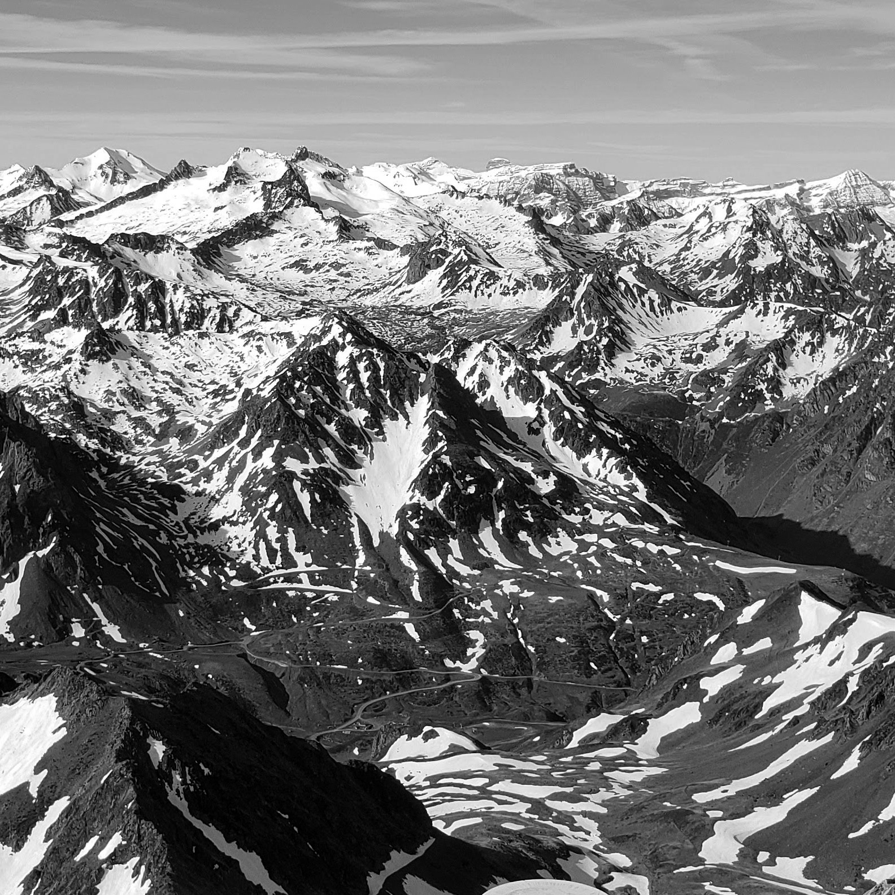
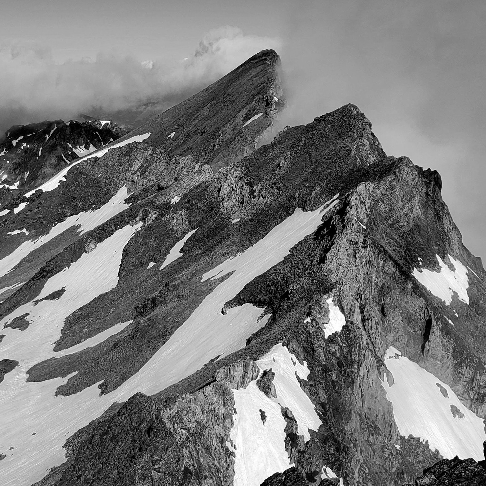
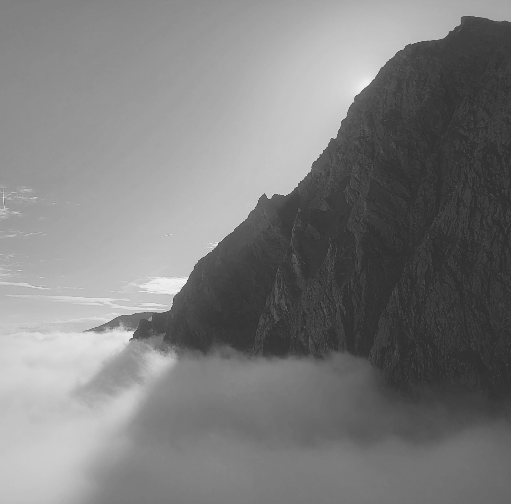
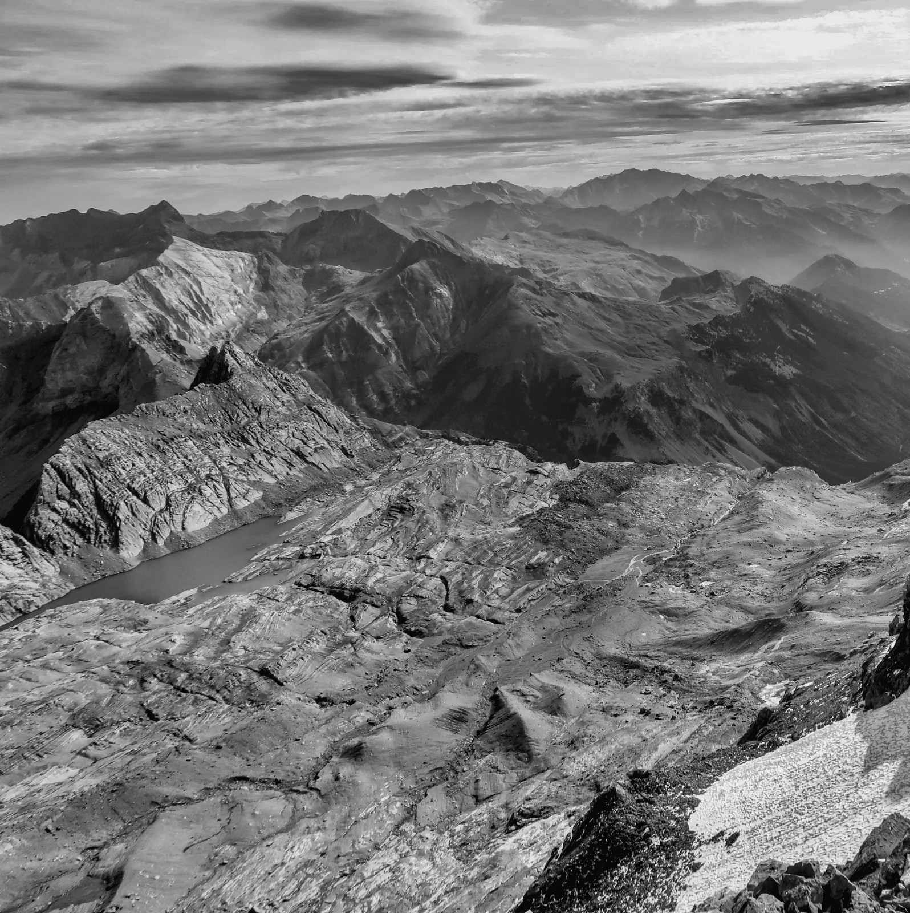
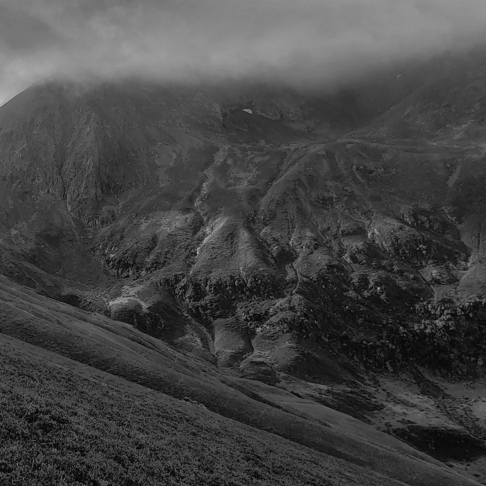
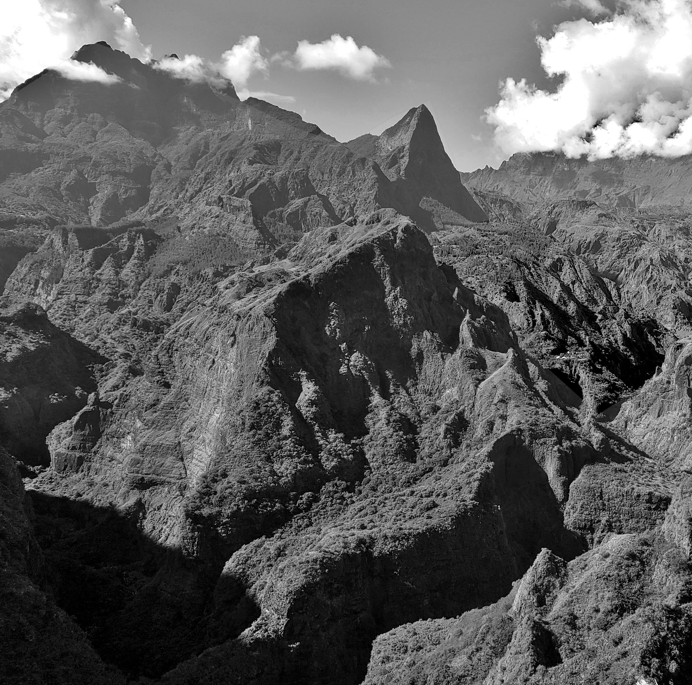

Home
Blog
Results
Contact
Race
Calendar
2022
1
st
2:09
(CR)
Bagneres Classic
25km 1500m d+
May 1
Bagneres-de-Bigorre
French Pyrenees
ARTICLE

1
st
2:08
(CR)
Hautacam Trails
22km 1650m d+
May 22
Beaucens
French Pyrenees
ARTICLE

2
nd
2:31
Patou Skyrace
22km 2200m d+
June 18
Saint Lary
French Pyrenees
ARTICLE

1
st
8:30
GTVO
72km 5000m d+
July 09
Laruns
French Pyrenees
ARTICLE

5
th
3:24
Les Gabizos
32km 2400m d+
July 23
Arrens-Marsous
French Pyrenees
Endurance Mag Article

1
st
18:28
Canfranc-Canfranc
100km 9000m d+
Sept 10
Canfranc
Spanish Pyrenees
Runnea Article

Grand Raid Reunion
168km 10500m d+
Oct 22
St Denis
Reunion Island
Race Website
Ideas
Inquiries
Invitations
Welcome
Contact